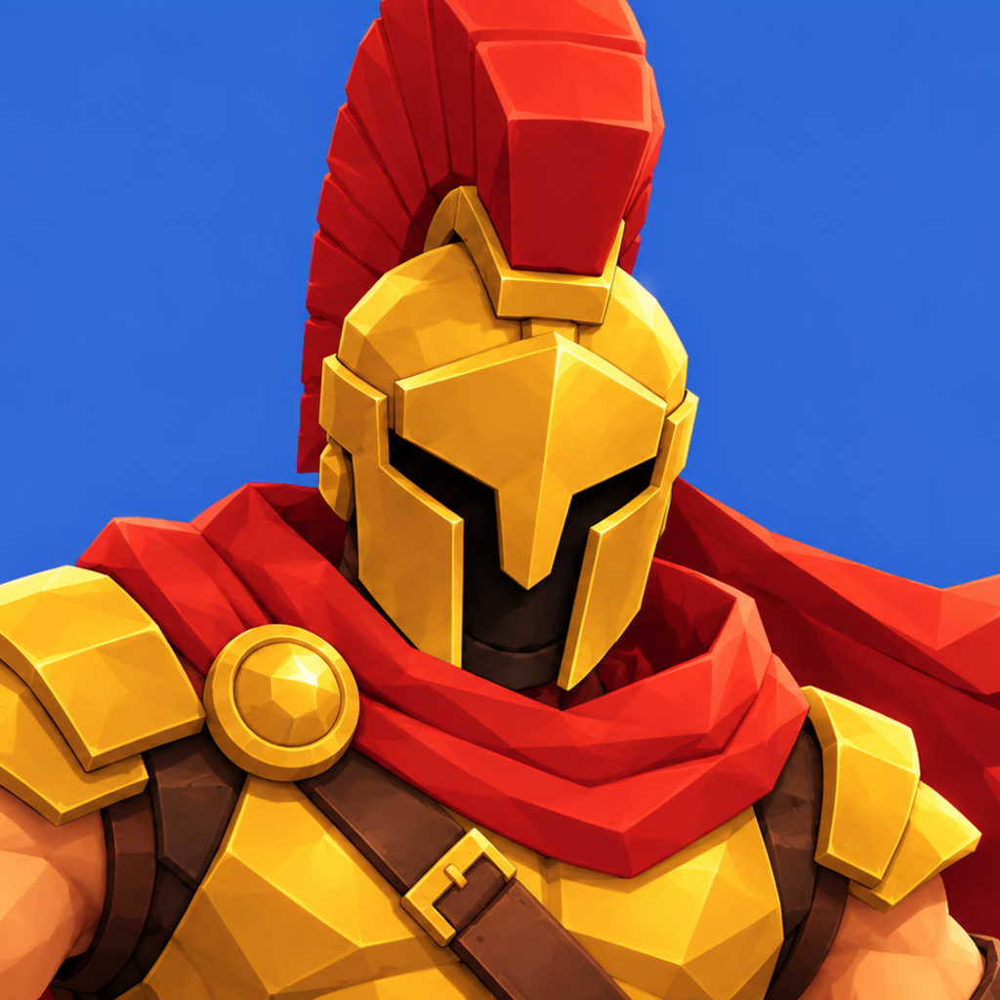

Nehir Düellosu
Nehrin iki yakasında birebir mızrak düellosu.
Destek
Bir sorun mu var, bir önerin mi? Bize yaz: nubittech0@gmail.com. Cihazının modelini ve iOS sürümünü yazarsan daha hızlı yardım ederiz.
Sık sorulanlar
İlerlemem nerede saklanıyor?
Yalnız cihazında. Oyunu silersen ilerleme de silinir.
Eğitimi yeniden oynayabilir miyim?
Evet: Ayarlar → Eğitimi Oyna.
Oyun internet istiyor mu?
Yalnız çevrim içi 1v1 için (SAVAŞ → 1v1). Bilgisayara karşı maçlar internetsiz oynanır; rakip bulunamazsa ya da internet yoksa SAVAŞ 20 saniye sonra bilgisayara karşı başlar.
Gizlilik
Gizlilik Politikası: oyun hiçbir veri toplamaz.
Support (English)
Questions or problems? Email nubittech0@gmail.com. Matches against the computer work offline; online 1v1 (SAVAŞ → 1v1) needs an internet connection. See the privacy policy for what online play uses.